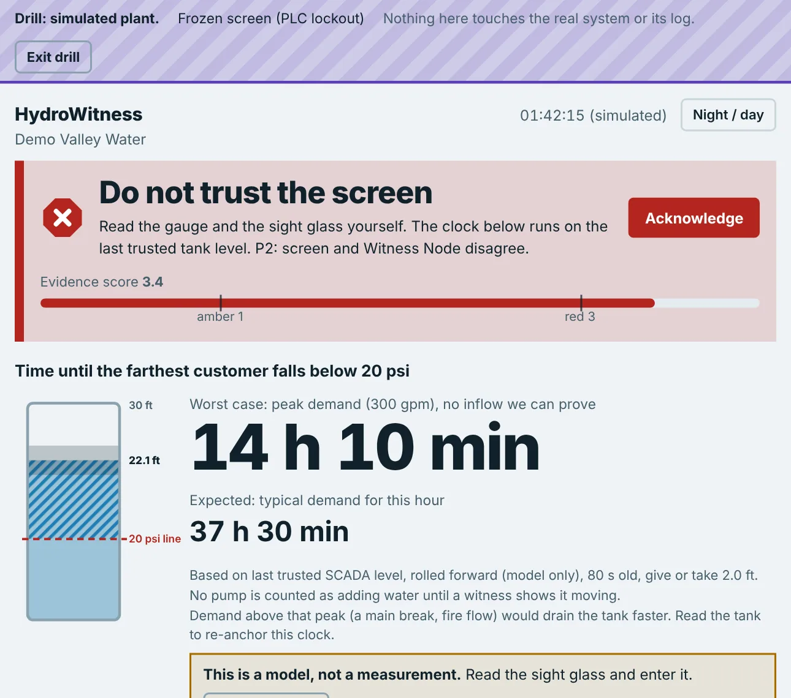

When the screen lies, the pipes still tell the truth.
HydroWitness is a read-only safety net for small water systems. It tells you how long your pressure will hold if SCADA goes dark, and warns you when SCADA's story disagrees with what the pumps are doing.
What SCADA says
- Tank 1 level
- 14.20 ft
- Pump 1
- STOPPED0 gpm
- Pump 2
- RUNNING183 gpm
- Comms
- OK
- Alarms
- None
Tank level, last 60 seconds. This is what the operator sees.
What the pipes sayA Witness Node clamped on Pump 2
What HydroWitness says
Green
Screen and witnesses agree
Nothing to do.
A simulated plant and a simulated Witness Node, shown at 10 times speed. The amber and red times are the medians of five runs each from our saved drill results. The tank and pump numbers on the mock screen, and the exact shape of the traces, are illustrations. The slider's colors show how the trust light changes over the whole run. For the real dashboard, open the Demo page.
From our saved results
A small system runs on one screen and a few people.
Many small water systems have one or two operators and a single SCADA screen that reports what the pumps, tanks and valves are doing. When that screen freezes, goes dark or is tampered with, the operator is left reading a story they can't check.
parts per million. In February 2021 someone got into the computer system of a water plant in Oldsmar, Florida, and raised the sodium hydroxide level from 100 to 11,100 ppm. An operator watched the cursor move on screen and brought it back down (WaterWorld).
of the water systems the EPA had surveyed since September 2023 failed to meet certain security standards, it said in May 2024. Many rural operators lack the money and staff to harden their systems (Nextgov).
Four steps. None of them can touch the plant.
HydroWitness only reads. It never sends a command to a pump, valve or controller, so adding it can't make the plant less safe.
Read
What the plant says (SCADA), what people say (operator readings and customer calls), and what the equipment does (the Witness Node).
Compare
Seven consistency rules check whether the stories agree. A frozen value, a replayed pattern, or a pump that sounds stopped while the screen says it runs all count.
Decide
Green, amber or red, with the reasons in plain words. Once it turns red it stays red until a person clears it.
Act
A Lockout Playbook walks the operator through what to do next, alerts go to a private channel, and every step goes into a tamper-evident log.
A clock that still runs when SCADA doesn't.
From the tank level and a physical model, HydroWitness estimates how many minutes until pressure at the system's critical point falls below 20 psi. The worst case assumes peak demand and gives no credit for water coming in until a witness shows it moving.

Run a small water system?
Tell us how you would use this, and what would stop you. We are students and would rather learn from an operator than guess.